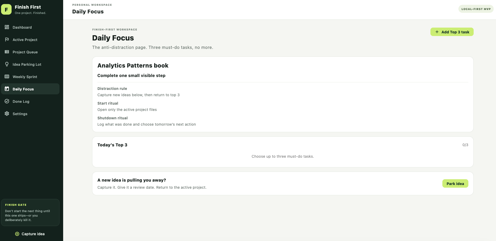
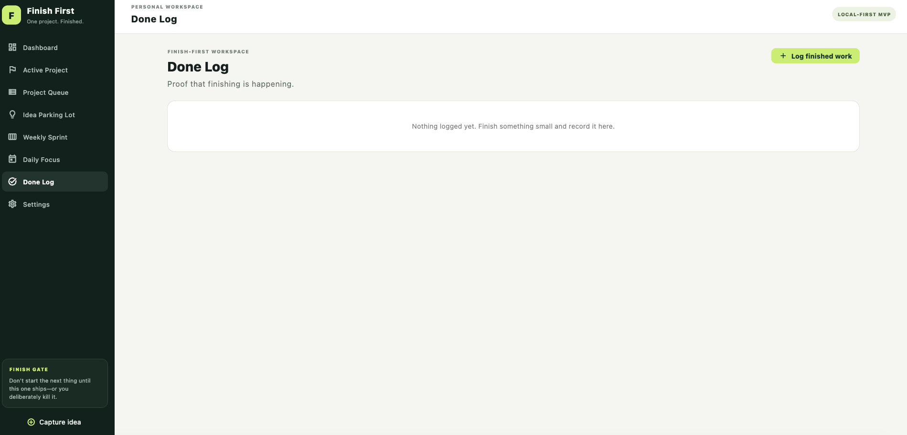
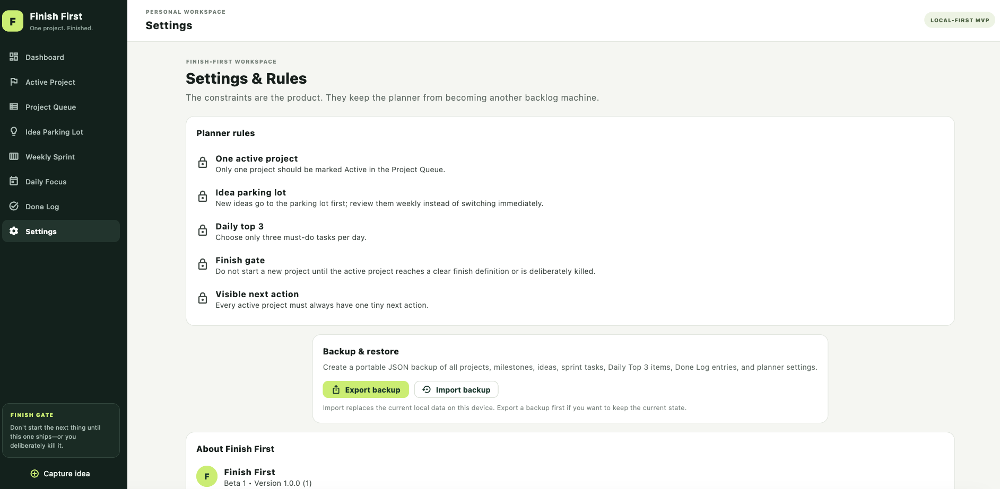

1. Tableau de bord
Le Tableau de bord présente le Projet actif, la progression des jalons, les idées mises de côté et la prochaine action. Il s'agit d'un résumé; modifiez le travail dans les écrans du projet, du sprint et des priorités du jour.

Un guide pratique des fonctions réellement offertes dans la version 1.0.
Le Tableau de bord présente le Projet actif, la progression des jalons, les idées mises de côté et la prochaine action. Il s'agit d'un résumé; modifiez le travail dans les écrans du projet, du sprint et des priorités du jour.
Saisissez ici les idées qui risquent de vous distraire au lieu de changer immédiatement de projet. Vous pouvez modifier ou supprimer une idée, et l'application permet de déplacer une idée saisie vers la File de projets.

La File de projets contient les projets que vous pourriez entreprendre. Examinez la priorité, l'impact, l'effort et le score de concentration. La version 1.0 permet aussi de créer un projet directement dans la file. Choisissez Rendre actif lorsque vous êtes prêt à vous engager.

Gardez un seul projet actif. Définissez clairement ce que signifie terminé, conservez une toute petite prochaine action et utilisez les jalons pour rendre la progression visible. L'activation d'un autre projet change le projet considéré comme actif.

Choisissez un petit ensemble de tâches pour la semaine et marquez-les terminées au fur et à mesure. Le sprint est une vue de planification; il ne crée pas automatiquement d'événements de calendrier.

Choisissez au maximum trois tâches essentielles. La règle de distraction ainsi que les rituels de début et de fin sont des rappels, et non des actions automatisées.

Consignez le travail terminé afin de conserver un historique visible de vos réalisations. Les entrées sont stockées localement avec les autres données de Finish First.

L'exportation crée une sauvegarde JSON portable. L'importation remplace les données locales actuelles de cet appareil; exportez donc d'abord si vous voulez préserver l'état actuel. La réinitialisation des données d'exemple remplace volontairement les données du planificateur.
